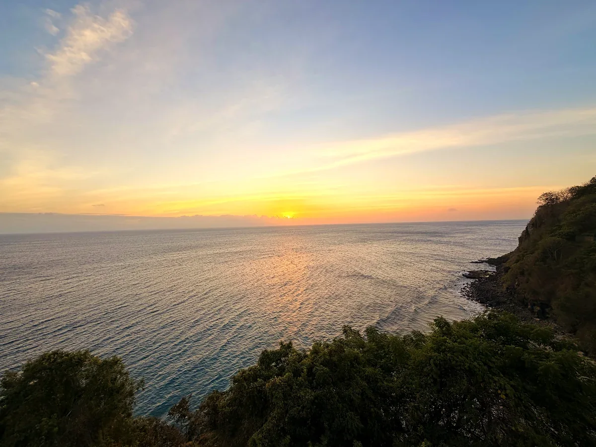

Indonesien
Regionen, Routen, Einreise, Kosten und Reisezeit für Schweizer, nach sechs Wochen auf Bali, Gili Air und Lombok.
Indonesien: Vulkane, Tempel und Strände auf über 17'000 Inseln.
Indonesien ist das grösste Inselland der Welt: über 17'000 Inseln, rund 280 Millionen Menschen und etwa 130 aktive Vulkane, verteilt auf mehr als 5'000 Kilometer von Sumatra bis Papua. Das ist weiter als von Zürich nach Dubai. Verständigen kannst du dich trotzdem fast überall, dank der Landessprache Bahasa Indonesia.
Wir waren im Sommer 2026 sechs Wochen auf Bali, Gili Air und Lombok. Alle anderen Regionen haben wir recherchiert, das steht jeweils dabei. Für den ersten Besuch passt Bali mit den Inseln östlich davon am besten.
Von Fabienne & Marc · vor Ort im Juli und August 2026 · aktualisiert am 7. November 2026


Indonesien auf einen Blick.
Kurz beantwortet. Ausführlicher steht alles in den Kapiteln weiter unten.
Brauche ich ein Visum für Indonesien?
Ja. Schweizer bekommen ein Visum bei Ankunft für 30 Tage für rund Fr. 23.– pro Person, einmal verlängerbar. Am besten kaufst du es vorab online als e-VoA. Dein Pass muss bei der Einreise noch mindestens sechs Monate gültig sein. Mehr zur Einreise
Wann ist die beste Reisezeit für Indonesien?
Für Bali, Lombok, die Gilis und Flores am trockensten von Mai bis Oktober, für Java von Juli bis September. Im Dezember bis März regnet es viel. Raja Ampat ist umgekehrt: Dort ist die See laut Anbietern von Oktober bis April ruhiger. Mehr zur Reisezeit
Wie lange sollte ich einplanen?
Mindestens zwei Wochen. Mit drei bis vier Wochen verbindest du zwei bis drei Regionen. Rechne bei jedem Inselwechsel mit einem ganzen Reisetag. Zu den Routen
Mit welcher Insel fange ich an?
Mit Bali. Hier landen die meisten internationalen Flüge, die Gilis und Lombok liegen direkt nebenan. Auf Java und in Flores gibt es mehr Kultur und Natur, dafür sind die Wege länger. Zu den Regionen
Welche Region passt zu mir?
Für den ersten Besuch Bali. Für Strand, Ruhe und Roller Lombok und die Gilis, für Tempel und Vulkane Java, für Tauchen Flores mit Komodo und Raja Ampat, für Natur und Orang-Utans Sumatra. Zur Tabelle
Was kostet Indonesien?
Mit einfachem Zimmer, Warung und Roller rund Fr. 20.– bis 30.– pro Person und Tag: Gili Air kostete uns Fr. 22.–, Kuta auf Bali rund Fr. 30.–. Dazu kommen der Flug ab Fr. 650.– und das Visum. Zu den Kosten
Wie komme ich von der Schweiz nach Indonesien?
Direkt geht es nicht. Du steigst in Doha, Dubai, Abu Dhabi, Istanbul oder Singapur um und bist 17 bis 22 Stunden bis Bali unterwegs. Hin und zurück kostet die Economy meist Fr. 650.– bis 900.–, im Sommer und an Weihnachten auch über Fr. 1'000.–. Zur Anreise
Ist Indonesien sicher?
Wir haben uns auf Bali, Gili Air und Lombok immer sicher gefühlt. Die grössten Risiken sind der Verkehr, Strömungen an manchen Stränden und gepanschter Alkohol. Aktuelle Hinweise stehen bei den Reisehinweisen des EDA (öffnet in neuem Tab). Mehr zu Sicherheit und Gesundheit

Indonesien in Zahlen
| Thema | Angabe |
|---|---|
| Hauptstadt | Jakarta auf Java. Auf Borneo wird mit Nusantara eine neue Hauptstadt gebaut. |
| Einwohner | Rund 280 Millionen, das viertgrösste Land der Welt nach Einwohnern. |
| Fläche | Rund 1,9 Millionen Quadratkilometer, etwa 46-mal die Schweiz. |
| Inseln | Über 17'000, davon rund 6'000 bewohnt. |
| Sprache | Bahasa Indonesia, dazu über 700 regionale Sprachen. In Touristenorten kommst du mit Englisch durch. |
| Religion | Rund 87 Prozent Musliminnen und Muslime. Bali ist mehrheitlich hinduistisch, Teile von Flores, Sulawesi und Papua christlich. |
| Währung | Indonesische Rupiah (IDR). 1 Franken sind rund 21'500 IDR, Stand Sommer 2026. |
| Zeitzonen | Drei. Im Schweizer Sommer sind Sumatra und Java 5 Stunden voraus, Bali bis Sulawesi 6, Papua 7. Im Winter je eine Stunde mehr. |
| Strom | 230 Volt, Steckdosen Typ C und F wie in Deutschland. |
| Verkehr | Linksverkehr. |
| Notruf | 112, Polizei 110, Ambulanz 118 oder 119, Feuerwehr 113. |
Anreise nach Indonesien: Flug ab Zürich.
Es gibt keinen Direktflug. Du steigst einmal um und bist rund 17 bis 22 Stunden bis Bali unterwegs. Hin und zurück kostet die Economy meist Fr. 650.– bis 900.–, im Sommer und an Weihnachten auch über Fr. 1'000.– (Richtwert, Stand Oktober 2026).
| Flughafen | Wofür | Hinweis |
|---|---|---|
| Bali (DPS) | Erste Reise, Bali, Gilis, Lombok, Flores | Hier landen die meisten internationalen Flüge. Von hier fahren die Boote zu den Nachbarinseln. |
| Jakarta (CGK) | Java und Sumatra | Die Hauptstadt ist der grösste Flughafen des Landes, mit Anschlüssen auf fast alle Inseln. |
| Yogyakarta, Surabaya, Medan, Makassar, Balikpapan, Labuan Bajo, Sorong | Tempel, Sumatra, Sulawesi, Borneo, Komodo, Raja Ampat | Meist mit Anschlussflug im Land. Raja Ampat hat keinen internationalen Flughafen, du fliegst nach Sorong und fährst mit dem Boot weiter. |
Flug ab Zürich
Umsteigen kannst du in Doha, Dubai, Abu Dhabi, Istanbul oder Singapur. Buch bei Routen über Java einen Gabelflug: Du fliegst nach Java hinein und von Bali wieder zurück, dann musst du nicht denselben Weg fahren.
Flüge über Weihnachten und im Juli und August sind am teuersten.
Von der Landung zum Hotel
Am Flughafen von Bali nimmst du den Taxischalter mit Festpreis oder Grab am ausgeschilderten Abholpunkt. Geld hebst du am Automaten im Terminal ab, eine SIM-Karte gibt es gleich daneben.
Mehr zu Anbietern: SIM-Karten.
Von Bali weiter
Die Gilis und Lombok erreichst du mit dem Schnellboot oder der Fähre, Lombok auch mit dem Flugzeug in rund 40 Minuten. Alle anderen Inseln mit dem Anschlussflug.
Mehr dazu bei Unterwegs.
Einreise und Visum für Indonesien.
Schweizer brauchen ein Visum. Für Ferien reicht das Visum bei Ankunft, das du am besten schon zu Hause online kaufst. Bleibst du länger als 30 Tage, verlängerst du es einmal oder nimmst gleich das Touristenvisum für bis zu 60 Tage.
| Visum | Wo beantragen | Aufenthalt | Gebühr |
|---|---|---|---|
| Visum bei Ankunft (VoA) | Am Schalter im Flughafen oder Hafen | 30 Tage, einmal um 30 Tage verlängerbar | rund Fr. 23.– |
| e-VoA | Online vorab auf evisa.imigrasi.go.id (öffnet in neuem Tab) | 30 Tage, einmal um 30 Tage verlängerbar | rund Fr. 23.– |
| Touristenvisum (C1) | Online vorab auf evisa.imigrasi.go.id | Bis 60 Tage, verlängerbar | höher als das VoA, den aktuellen Betrag findest du im Portal |
Beantrage Visa nur auf der offiziellen Seite, es gibt viele Kopien mit Aufpreis. Höhere Gebühren für das VoA (online rund Fr. 35.–, am Schalter rund Fr. 47.–) sind seit August 2026 vorgeschlagen, aber noch nicht in Kraft (Stand Anfang November 2026).
Welches Visum passt?
Bis 30 Tage nimmst du das e-VoA: Du bezahlst online, bekommst das Visum per Mail und gehst bei der Ankunft am Visumschalter vorbei. Für 31 bis 60 Tage verlängerst du das e-VoA oder nimmst gleich das C1.
Visum verlängern
Die Verlängerung startest du online im e-Visa-Portal, danach musst du einmal persönlich aufs Immigration Office (Foto, Fingerabdrücke). Fang 7 bis 14 Tage vor Ablauf an. Jeder Tag zu viel kostet rund Fr. 47.–, bei längerem Überziehen drohen Ausschaffung und Einreisesperre.
Pass und Weiterreise
Dein Pass muss bei der Einreise noch mindestens sechs Monate gültig sein und freie Seiten haben, die Identitätskarte reicht nicht. Man kann dich nach einem Rück- oder Weiterreiseticket fragen, mehr dazu beim Weiterreiseticket.
All Indonesia Arrival Card
Alle Reisenden füllen vor der Ankunft die digitale Einreisekarte auf allindonesia.imigrasi.go.id (öffnet in neuem Tab) aus. Sie ist kostenlos und in den drei Tagen vor der Ankunft möglich. Mach einen Screenshot vom QR-Code, das WLAN am Flughafen ist nicht immer schnell.
Touristenabgabe Bali
Wer nach Bali reist, zahlt rund Fr. 7.– pro Person und Besuch, am einfachsten vorab auf lovebali.baliprov.go.id (öffnet in neuem Tab). Sie gilt auch, wenn du von einer anderen Insel nach Bali kommst. Auf Lombok und den Gilis gibt es sie nicht.
Zoll
Drogen, Waffen, Pornografie und gewisse Medikamente sind verboten oder bewilligungspflichtig, mehr dazu bei Praktisches. Bargeld ab 100 Millionen IDR, rund Fr. 4'650.–, musst du deklarieren. Die Freigrenzen stehen bei der Zollbehörde Bea Cukai.
Deine Checkliste bis zur Ankunft
3 bis 6 Monate vorher
Flug buchen, bei Routen über Java als Gabelflug. Pass prüfen: mindestens sechs Monate gültig ab Einreise. Reisezeit mit Ramadan, Lebaran und Nyepi abgleichen.
6 bis 8 Wochen vorher
Reisemedizinische Beratung, manche Impfungen brauchen mehrere Termine. Auslandskrankenversicherung mit Rücktransport abschliessen. Internationalen Führerausweis bestellen, falls du Roller fahren willst.
2 bis 4 Wochen vorher
Medikamente besorgen, mit Arztzeugnis auf Englisch. Karten für Asien freischalten und Limiten prüfen. Reise in der App Travel Admin des EDA erfassen. eSIM kaufen. Boote in der Hochsaison vorab buchen.
1 bis 2 Wochen vorher
Visum online beantragen, beim C1 mindestens eine Woche Reserve einplanen. Für Bali die Touristenabgabe zahlen. Weiterreiseticket bereithalten.
1 bis 3 Tage vorher
All Indonesia Arrival Card ausfüllen und den QR-Code speichern. Visum, Pass und Versicherungsnachweis als PDF aufs Handy und in die Cloud.
Bei der Ankunft
Mit e-VoA direkt zur Passkontrolle, sonst zuerst an den Visumschalter. Am Zoll zeigst du den QR-Code der Arrival Card, auf Bali wird auch die Touristenabgabe kontrolliert. Packliste: Packliste.
Indonesien Regionen: von Sumatra bis Raja Ampat.
Bali, Lombok und die Gilis kennen wir selbst. Die anderen Regionen haben wir recherchiert, die Fotos dort sind nicht von uns.


Welche Region passt zu dir?
| Region | Für wen | Anreise ab Bali | Budget | Mindestens | Bei uns |
|---|---|---|---|---|---|
| 1 Sumatra | Natur, Orang-Utans, Vulkansee | Flug nach Medan, dann 3 bis 5 Stunden auf der Strasse | tief | 7 bis 10 Tage | recherchiert |
| 2 Java | Tempel, Vulkane, Kultur | Flug nach Yogyakarta in gut 1 Stunde oder Fähre ab Ostjava | tief | 6 bis 8 Tage | recherchiert |
| 3 Bali | Erste Reise, Komfort, Kultur | Hier landest du | mittel | 5 bis 7 Tage | selbst bereist |
| 4 Gili-Inseln | Schnorcheln, Ruhe, keine Autos | Schnellboot ab Padang Bai | mittel | 4 bis 7 Tage | selbst bereist |
| 5 Lombok | Leere Strände, Roller, Rinjani | Flug 40 Minuten oder Fähre 4 bis 5 Stunden | tief | 5 bis 10 Tage | selbst bereist |
| 6 Flores und Komodo | Bootstouren, Tauchen, Komodowarane | Flug nach Labuan Bajo in gut 1 Stunde | hoch | 4 bis 6 Tage | recherchiert |
| 7 Sulawesi | Abseits der Route, Toraja-Kultur | Flug nach Makassar oder Manado, dann lange Fahrten | mittel | 10 bis 14 Tage | recherchiert |
| 8 Raja Ampat | Tauchen und Schnorcheln | Flug nach Sorong mit Umstieg, dann Boot | hoch | 7 bis 10 Tage | recherchiert |
Nicht vorgestellt: Jakarta (rund 10 Millionen Einwohner, Drehkreuz für Flüge), Kalimantan auf Borneo, die Molukken, Sumba, Sumbawa und die Kei-Inseln. Dort waren wir nicht und haben nicht genug recherchiert.
Budget: tief heisst Gästehaus und Warung reichen, hoch heisst Bootstouren oder Tauchpakete treiben die Kosten. Die Fahrzeiten sind Richtwerte, Stand Oktober 2026.


01Sumatra
Orang-Utans im Regenwald und ein Vulkansee mit einer Insel drin.
Die sechstgrösste Insel der Welt ist wild und wenig touristisch. Im Norden liegt der Tobasee, der grösste Vulkansee der Erde, mit der Insel Samosir in der Mitte. Bei Bukit Lawang am Rand des Gunung-Leuser-Nationalparks siehst du mit Guides Orang-Utans in freier Wildbahn, im Westen liegen die Mentawai-Inseln für Surfer.
Gut zu wissen: Medan hat die meisten Flüge der Insel, auch aus Singapur, Malaysia und Thailand. Zum Tobasee fliegst du auch nach Silangit, mit Flügen aus Jakarta. Auf der Trans-Sumatra-Strasse sind Überfälle auf Fahrzeuge bekannt, fahr nachts nicht selbst. In der Trockenzeit kann Rauch von Waldbränden die Luft belasten. Taucher fahren auf die Insel Weh im Norden.
Für wen? Für alle, die Natur wollen und lange Busfahrten aushalten. Du fliegst meist nach Medan, von dort geht es über Land weiter. Noch nicht bereist.


02Java
Die grossen Tempel und die Vulkane zum Sonnenaufgang.
Auf Java liegt die Hauptstadt Jakarta, und hier lebt mehr als die Hälfte der Bevölkerung. Die meisten Reisenden zieht es nach Yogyakarta, der Kulturhauptstadt mit zwei grossen Tempeln in der Nähe: Borobudur, die grösste buddhistische Tempelanlage der Welt, und das hinduistische Prambanan, beide UNESCO-Welterbe. Im Osten warten der Bromo zum Sonnenaufgang und der Ijen mit seinem Kratersee.
Gut zu wissen: Am Borobudur lohnt der Sonnenaufgang, am Prambanan am Abend die Ramayana-Aufführung vor den beleuchteten Türmen. Tickets für den Zug kannst du bis zu 90 Tage vorher reservieren. Die Strecke Jakarta–Surabaya gehört zu den meistgeflogenen der Welt. Alles auf einmal ist kaum machbar: Plan für Yogyakarta, Bromo und Ijen mindestens eine Woche ein.
Für wen? Für alle, die Kultur und Vulkane wollen und Städte nicht scheuen. Vom Osten Javas fährt die Fähre in rund einer Stunde nach Bali. Noch nicht bereist.

03Bali
Hier sind wir gelandet. Und hier landen fast alle.
Bali ist die einzige mehrheitlich hinduistische Provinz Indonesiens. Überall stehen Tempel, jeden Morgen liegen frische Opfergaben auf dem Boden. Der Süden ist laut und voll, wer Ruhe sucht, fährt nach Ubud, in den Osten oder in den Norden. Von hier fahren die Boote zu den Nachbarinseln.
Unsere Erfahrung: Neun Nächte in Kuta, mit Sonnenuntergängen am Strand und Nasi Goreng für Fr. 1.60. Ein guter Ort zum Ankommen. Zum Bali-Guide

04Gili-Inseln
Drei kleine Inseln ohne Autos, mit Schildkröten vor dem Strand.
Vor der Nordwestküste von Lombok liegen Gili Trawangan, Gili Meno und Gili Air. Autos und Motorroller gibt es keine, du läufst, fährst Velo oder nimmst eine Pferdekutsche. Trawangan ist die Partyinsel, Meno die stillste, Gili Air liegt dazwischen.
Unsere Erfahrung: Zwei Wochen Gili Air, fast jeden Morgen Schnorcheln mit Schildkröten und fast jeden Abend Sonnenuntergang. Zum Gili-Air-Guide

05Lombok
Die grosse Schwester von Bali, nur ruhiger.
Lombok liegt gleich östlich von Bali, ist aber mehrheitlich muslimisch und deutlich weniger erschlossen. Im Süden um Kuta liegen weite Buchten und Surfstrände, im Norden der Rinjani, mit 3726 Metern der zweithöchste Vulkan des Landes. Ohne Roller oder Fahrer kommst du kaum weg.
Unsere Erfahrung: Sieben Nächte Senggigi und zehn Nächte Kuta, die Unterkünfte kosteten zusammen Fr. 121.50 pro Person. Strände mit deutlich weniger Leuten als auf Bali. Zum Lombok-Guide


06Flores und Komodo
Ab Labuan Bajo aufs Boot, zu den Komodowaranen.
Ab Labuan Bajo im Westen von Flores fahren Boote in den Komodo-Nationalpark. Nur hier und auf ein paar Nachbarinseln lebt der Komodowaran, die grösste Echse der Welt. Dazu kommen die Aussicht auf Padar, Mantas und sehr gute Tauchplätze. Weiter östlich auf Flores liegt der Vulkan Kelimutu mit drei Kraterseen, die ihre Farbe ändern.
Gut zu wissen: Es fliegen mehrere Flüge täglich von Bali nach Labuan Bajo. Die Komodowarane siehst du auf Komodo und Rinca, nur mit Ranger. Die Parkverwaltung sitzt auf Rinca, dort gibt es die Tickets. Geh nie allein los und flüchte nicht ins Wasser, Komodowarane schwimmen. Im August und September ist es sehr heiss und trocken, Schnorcheln bei Manta-Strömung ist nichts für Anfänger.
Für wen? Für alle, die tauchen, schnorcheln oder einmal auf einem Boot schlafen wollen. Nach Labuan Bajo fliegst du von Bali in gut einer Stunde. Noch nicht bereist.


07Sulawesi
Häuser mit Bootsdächern und Inseln abseits der üblichen Route.
Die Insel mit der seltsamen Form ist ein Abenteuer. Im Hochland von Tana Toraja leben die Toraja in Häusern mit geschwungenen Dächern, berühmt sind ihre aufwendigen Begräbnisfeiern. Im Norden bei Manado liegt der Meerespark Bunaken, in der Mitte die abgelegenen Togian-Inseln.
Gut zu wissen: Der Flughafen von Makassar ist das Tor zur Insel. Die Strasse von Makassar nach Manado ist rund 2'000 Kilometer lang, schmal und kurvig, darum fliegen die meisten. Nach Tana Toraja kommst du über Rantepao. Bei Begräbnisfeiern darfst du oft zuschauen, dort werden Tiere geopfert. Bunaken erreichst du von Manado, die Togian-Inseln liegen weit abseits.
Für wen? Für alle, die Zeit haben und dorthin wollen, wo kaum andere Reisende sind. Die Wege sind lang, oft fliegst du besser. Für Zentral-Sulawesi mit der Gegend um Poso hat das EDA spezielle Hinweise. Noch nicht bereist. Zum Sulawesi-Guide


08Raja Ampat
Eines der artenreichsten Meeresgebiete der Welt, ganz im Osten.
Vor der Küste von Westpapua liegen Hunderte Karstinseln. Unter Wasser gilt Raja Ampat als eines der artenreichsten Meeresgebiete der Erde, über Wasser sind die Aussichtspunkte Piaynemo und Wayag bekannt.
Gut zu wissen: Du fliegst nach Sorong und nimmst die Fähre nach Waisai, die Überfahrt dauert rund zwei Stunden. Abfahrt ist meist um 9 und 14 Uhr, an Feiertagen fährt sie nicht. Für den Meerespark brauchst du eine Eintrittskarte, kauf sie nur an offiziellen Stellen. Piaynemo erreichst du ab Waisai in rund 1,5 bis 2 Stunden mit dem Schnellboot, Wayag in 3,5 bis 4. Geldautomaten gibt es kaum, heb in Sorong ab. Strom läuft oft nur abends. Wegen der Strömungen eignet sich Raja Ampat nicht für Taucher ohne Erfahrung.
Für wen? Für Taucherinnen und Schnorchler mit Zeit und Budget. Du fliegst nach Sorong und fährst mit dem Boot weiter, die Unterkünfte sind einfach und nicht billig. Das EDA hat für Papua spezielle Hinweise, laut healthytravel.ch besteht dort ein mittleres Malariarisiko. Noch nicht bereist.
Indonesien Reiseroute: 2, 3, 4 oder 6 Wochen.
Vier Routen mit Nächten pro Ort und Puffer für verspätete Boote und Flüge. Dazu das Budget pro Person in Franken, inklusive Flug.
2 Wochen: Bali und Gili Air
14 Nächte. Bali Süden 3, Ubud 4, Gili Air 5, Bali Süden 2. Kurze Wege, wenig Stress, ideal für die erste Reise.
Puffer: Die letzten zwei Nächte auf Bali. Nimm das Boot nie am Tag des Rückflugs, Wind und Seegang verschieben die Fahrten.
Nicht geeignet für: Alle, die Orte ohne andere Touristen suchen. Bali und die Gilis sind beliebt, vor allem im Juli und August.
Hier geht Zeit drauf: Der Tag mit dem Boot nach Gili Air und der Verkehr im Süden von Bali.
3 Wochen: Bali, Gili Air und Lombok
21 Nächte. Bali Süden 3, Ubud 3, Gili Air 5, Lombok (Senggigi) 7, Bali Süden 3. So ähnlich sind wir gereist, nur länger.
Puffer: Die drei Nächte am Schluss auf Bali. Fällt ein Flug aus, verlierst du Strandtage statt den Heimflug.
Nicht geeignet für: Alle, die nicht Roller fahren wollen und kein Geld für einen Fahrer einplanen. Im Süden von Lombok kommst du ohne kaum zu den Stränden.
Hier geht Zeit drauf: Die Anreise nach Gili Air und der halbe Tag von Gili Air nach Lombok.
4 Wochen: von Java bis Lombok
27 Nächte. Yogyakarta 4, Bromo 2, Ijen 2, Ubud 4, Osten von Bali 3, Gili Air 5, Lombok 4, Bali Süden 3. Tempel und Vulkane zuerst, dann Strand. Java haben wir recherchiert.
Puffer: Die drei Nächte am Schluss auf Bali. Buch den Flug als Gabelflug, dann musst du nicht nach Jakarta zurück.
Nicht geeignet für: Alle, die vor allem ausspannen wollen. Auf Java hast du mehrere lange Reisetage und zwei sehr frühe Morgen.
Hier geht Zeit drauf: Die Strecke von Yogyakarta über den Bromo nach Bali: drei Reisetage in einer Woche.
6 Wochen: unsere Route
40 Nächte. Kuta auf Bali 5, Gili Air 14, Senggigi auf Lombok 7, Kuta auf Lombok 10, zum Schluss Bali 4. Für Gili Air und Lombok zahlten wir pro Person Fr. 294.– für 31 Nächte, rund Fr. 9.50 pro Nacht.
Puffer: Die vier Nächte am Schluss auf Bali.
Nicht geeignet für: Alle, die kein Visum verlängern wollen: Für mehr als 30 Tage musst du es verlängern.
Hier geht Zeit drauf: Die Inselwechsel mit Boot und Fähre.
Budget pro Person: einfach
| Posten | 2 Wochen | 3 Wochen | 4 Wochen |
|---|---|---|---|
| Flug Zürich–Bali (4 Wochen: Java hin, Bali zurück) | 650 | 650 | 700 |
| Unterkunft | 140 | 210 | 270 |
| Essen | 170 | 250 | 280 |
| Transport vor Ort | 90 | 140 | 220 |
| Aktivitäten und Touren | 50 | 60 | 120 |
| Visum und Abgaben | 32 | 32 | 32 |
| Total pro Person | rund 1'150 | rund 1'350 | rund 1'600 |
Budget pro Person: mit mehr Komfort
| Posten | 2 Wochen | 3 Wochen | 4 Wochen |
|---|---|---|---|
| Flug | 1'000 | 1'000 | 1'100 |
| Unterkunft | 630 | 840 | 1'080 |
| Essen | 420 | 590 | 700 |
| Transport vor Ort | 180 | 330 | 420 |
| Aktivitäten und Touren | 200 | 250 | 350 |
| Visum und Abgaben | 32 | 32 | 32 |
| Total pro Person | rund 2'450 | rund 3'050 | rund 3'700 |
So gerechnet: pro Person im Doppelzimmer, Flug in der Economy ab Zürich ausserhalb von Sommer und Weihnachten, ohne Versicherung und Ausrüstung. Einfach heisst Gästehaus mit rund Fr. 10.– pro Person und Nacht (bei uns Fr. 3.– bis 12.50), Warung und öffentliche Boote. Mit mehr Komfort heisst Mittelklassehotel mit Pool, Restaurants und private Transfers. Eine Schätzung, kein Angebot. Kurs 1 Franken sind rund 21'500 IDR.
Unterwegs in Indonesien: Flug, Boot, Roller und Grab.
Zwischen den Inseln fliegst du oder nimmst das Boot. Auf den Inseln selbst kommt es darauf an, wo du bist.
Inlandflüge
Für weite Strecken der schnellste Weg, etwa von Bali nach Labuan Bajo, Yogyakarta oder Lombok. Es fliegen unter anderem Garuda, Citilink, Lion Air, Batik Air und Wings Air. Ein Flug kostet meist Fr. 45.– bis 140.– (Richtwert), oft auf Propellermaschinen. Verspätungen sind normal, plane keine knappen Anschlüsse.
Fähren und Schnellboote
Die staatlichen Fähren sind langsam und sehr günstig, Tickets gibt es online über Ferizy. Schnellboote sind schneller und teurer, zum Beispiel von Bali zu den Gilis. Bei Wind fallen Boote aus, Wertsachen gehören ins Handgepäck. Für mehrtägige Fahrten gibt es die Pelni-Schiffe, deren Fahrpläne erst einen Monat vorher erscheinen und die du in Pelni-Büros buchst.
Lies dein Ticket genau. Bei uns war der Treffpunkt laut Voucher ein IKEA, und die Hafengebühr von Fr. 0.70 pro Person stand nicht im Preis.
Zug auf Java
Auf Java fährt die staatliche Bahn zwischen den grossen Städten wie Jakarta und Yogyakarta, die Tickets kaufst du online. Economy reicht bis rund vier Stunden, für längere Strecken lohnt Eksekutif. Tickets gibt es am Bahnhof, in der KAI-App, bei tiket.com und bei 12Go. Auf den anderen Inseln spielt die Bahn kaum eine Rolle.
Grab und Gojek
Die beiden Apps funktionieren wie Uber, für Auto und Roller-Taxi. Auf Java und im Süden von Bali klappt das gut. Auf Lombok findest du ausserhalb von Mataram und dem Flughafen oft keinen Fahrer, dort hilft nur der eigene Roller oder ein privater Fahrer.
Roller und Fahrer
Ein Roller kostet Fr. 3.– bis 4.– am Tag und ist auf vielen Inseln das Verkehrsmittel. Es gilt Linksverkehr. Fahr nur, wenn du sicher bist, mit Helm und gültigem Ausweis. Ein Privatfahrer für einen Tag kostet auf Lombok rund Fr. 23.– bis 33.–. Mehr im Lombok-Guide.
Touren und Tickets
Touren buchst du über Plattformen oder bei lokalen Anbietern vor Ort, lies vorher die Bewertungen. Tickets für Züge und Boote gibt es online bei 12Go oder tiket.com. Fahrpläne und Preise ändern sich, prüf sie vor der Abreise und buch Boote in der Hochsaison früh.
Unterkunft in Indonesien: Gästehaus, Hotel und Villa.
Einfache Zimmer kosten uns zwischen Fr. 3.– und 12.50 pro Person und Nacht. Wir haben fast immer einfach gewohnt, im Doppelzimmer.
| Ort | Preis pro Person und Nacht | Bei uns |
|---|---|---|
| Bali, Kuta | rund Fr. 3.– | einfaches Hotel in Kuta, siehe Bali-Guide |
| Gili Air | Fr. 12.50 | Segar Village mit Frühstück, 14 Nächte |
| Lombok, Senggigi | Fr. 7.30 | Senggigi Cottages, 7 Nächte |
| Lombok, Kuta | Fr. 7.05 | Fullmoon Homestay, 10 Nächte |
Gästehaus und Homestay
Familiengeführt und einfach, oft mit Klimaanlage und Frühstück. Hier haben wir fast immer gewohnt. Die Ausstattung schwankt stark: Warmwasser und Strom sind nicht überall verlässlich, bei uns gab es im Homestay in Kuta kein warmes Wasser. Schlafsäle findest du ausserhalb von Bali und Labuan Bajo kaum, dazu gibt es Surf- und Tauchcamps. Schau vor dem Buchen auf Bewertungen und Lage.
Hotel und Villa
Auf Bali bekommst du im Süden einfache Hotels mit Pool schon für wenig Geld. Mehr Komfort, Villen und Resorts kosten ein Vielfaches, vor allem in Ubud, Seminyak und Canggu.
Worauf du achtest
Liegt eine Moschee gleich nebenan, hörst du den Gebetsruf früh am Morgen. In Orten mit Baustellen wird es laut. Im Juli, August und über Weihnachten buchst du auf den Gilis und in Labuan Bajo früh.
Essen in Indonesien: Warung, Nasi Goreng und Sambal.
Gegessen wird meist im Warung, einem kleinen einfachen Lokal. Ein Gericht kostet dort oft weniger als Fr. 2.–. Diese Gerichte findest du fast überall.

Im Warung
Ein Warung ist ein kleines, einfaches Lokal, oft ein Familienbetrieb. Auf dem Schild steht meist, was es gibt: Nasi Goreng, Burger, Curry und Satay. Bezahlt wird fast immer bar.
Schau vor dem Bestellen, was auf den anderen Tischen steht, und frag nach dem Preis, wenn keine Karte da ist.
Typische Gerichte
| Gericht | Was es ist |
|---|---|
| Nasi Goreng | Gebratener Reis mit Ei, oft mit Krupuk. Gibt es überall, zu jeder Tageszeit. |
| Mie Goreng | Dasselbe mit Nudeln. Der Klassiker, wenn du die Karte nicht lesen kannst. |
| Sate | Kleine Spiesse vom Grill, meist Huhn oder Rind, mit Erdnusssauce und Reis. |
| Gado Gado | Gemüse, Tofu, Tempeh und Ei mit Erdnusssauce. Eine gute Wahl für Vegetarier, das Ei kannst du weglassen. |
| Rendang | Rindfleisch, stundenlang in Kokosmilch und Gewürzen geschmort. Stammt von den Minangkabau auf Sumatra. |
| Nasi Campur | Reis mit kleinen Portionen von allem, was die Küche gerade hat. Jedes Mal anders. |
| Tempeh | Fermentierte Sojabohnen aus Java, gebraten oder in Sauce. Günstig und viel Eiweiss. |
| Babi Guling | Spanferkel mit Gewürzen. Gibt es fast nur auf Bali, im restlichen Land isst die Mehrheit kein Schweinefleisch. |
| Ayam Taliwang | Gegrilltes junges Huhn mit viel Chili, eine Spezialität von Lombok. Richtig scharf. |
| Sambal | Chilipaste, die zu fast jedem Essen gehört. Wer es mild mag, bestellt tidak pedas. |
Wasser und Alkohol
Leitungswasser trinkst du besser nicht. Wasser in Flaschen gibt es überall, viele Unterkünfte füllen deine Flasche auf. Vorsicht bei Arak, einem Palmschnaps in vielen Cocktails: Auf Bali und Lombok gab es Fälle mit Methanol, die bis zur Erblindung und zum Tod führten. Trink Arak nur aus versiegelter Flasche.
Was kostet Indonesien?
Indonesien ist günstig, solange du in Warungs isst und einfach wohnst. Wir kamen auf Gili Air im Juli 2026 auf Fr. 22.– pro Person und Tag, in Kuta auf Bali rechnen wir mit rund Fr. 30.–, auf Lombok mit rund Fr. 20.– (Rechenbeispiel). Teuer wird es dort, wo du aufs Boot musst, zum Beispiel in Komodo und Raja Ampat.

Visum bei Ankunft: Fr. 23.–
Pro Person, 30 Tage, einmal verlängerbar. Höhere Gebühren sind vorgeschlagen, aber noch nicht in Kraft (Stand Anfang November 2026).
Touristenabgabe Bali: Fr. 7.–
Pro Person, einmal pro Besuch, vorab online.
Essen im Warung: Fr. 1.– bis 3.50
Ein Gericht kostete uns auf Lombok meist Fr. 1.– bis 2.–, auf Gili Air Fr. 1.50 bis 3.50.
Unterkunft: Fr. 3.– bis 12.50 / Nacht
Pro Person, einfach, siehe Unterkunft. Für Gili Air und Lombok zahlten wir pro Person Fr. 294.– für 31 Nächte, rund Fr. 9.50 pro Nacht.
Roller: Fr. 3.– bis 4.– / Tag
Bei uns auf Lombok Fr. 3.– am Tag.
Schnellboot Bali nach Gili Air: Fr. 18.50
Pro Person ab Kuta mit Abholung. Im Hafen kommt eine Hafengebühr von Fr. 0.70 dazu.
Fähre Bali nach Lombok: Fr. 3.–
Pro Person, Padang Bai nach Lembar, Tarif Ende 2025.
Inlandflug: Fr. 45.– bis 140.–
Pro Person und Strecke, Richtwert aus Reiseblogs, nicht von uns geprüft.
Zug Jakarta nach Yogyakarta: Fr. 13.– bis 23.–
Pro Person, rund 8 Stunden, Economy günstiger, Eksekutif bequemer. Richtwert aus Reiseblogs, nicht von uns geprüft.
Geldautomat: Fr. 2.30 bis 3.50 / Bezug
Gebühr des Automaten pro Abhebung, dazu kommt die Gebühr deiner Bank.
Alle Beträge in Franken, pro Person, umgerechnet mit rund 21'500 IDR pro Franken. Preise, die wir im Sommer 2026 auf Bali, Gili Air und Lombok bezahlt oder gesehen haben. Das Budget für ganze Routen steht bei den Routen, die Ausgaben einer langen Reise bei Budget & Kosten.
Beste Reisezeit für Indonesien: Wetter und Regen nach Regionen.
Am trockensten ist es für Bali, Lombok, die Gilis und Flores von Mai bis Oktober, für Java von Juli bis September. Juli und August sind Hochsaison, dann sind Unterkünfte und Boote voller und teurer. Warm ist es immer: tagsüber meist 28 bis 33 Grad, das Meer hat 27 bis 30 Grad.
Wetter im Jahresverlauf
Durchschnittliche Höchsttemperatur und Regenmenge pro Monat.
| Ort | Jan | Feb | Mär | Apr | Mai | Jun | Jul | Aug | Sep | Okt | Nov | Dez |
|---|---|---|---|---|---|---|---|---|---|---|---|---|
| Sumatra | ||||||||||||
| 28 °Cmittel, 176 mm | 28 °Cmittel, 121 mm | 29 °Cmittel, 134 mm | 29 °Cmittel, 158 mm | 30 °Cmittel, 172 mm | 30 °Cmittel, 112 mm | 30 °Cmittel, 102 mm | 30 °Cmittel, 120 mm | 29 °Cmittel, 180 mm | 28 °Cviel Regen, 235 mm | 28 °Cviel Regen, 279 mm | 27 °Cviel Regen, 295 mm | |
Bukit Lawang: Regen pro Monat Mittelwerte 1991–2020 aus der ERA5-Reanalyse (Modellwert für eine Zelle von etwa 28 × 28 km, Zelle 3.62°, 98.10°). Die Temperatur liegt an geprüften Stationen meist 1 bis 2 Grad tiefer als gemessen. Mehr bei «Quellen und Methode». | ||||||||||||
| 29 °Cviel Regen, 219 mm | 29 °Cmittel, 159 mm | 30 °Cviel Regen, 203 mm | 30 °Cviel Regen, 258 mm | 30 °Cviel Regen, 293 mm | 30 °Cviel Regen, 220 mm | 30 °Cviel Regen, 223 mm | 30 °Cviel Regen, 257 mm | 30 °Cviel Regen, 361 mm | 29 °Cviel Regen, 401 mm | 28 °Cviel Regen, 385 mm | 28 °Cviel Regen, 318 mm | |
Medan: Regen pro Monat Mittelwerte 1991–2020 aus der ERA5-Reanalyse (Modellwert für eine Zelle von etwa 28 × 28 km, Zelle 3.62°, 98.69°). Die Temperatur liegt an geprüften Stationen meist 1 bis 2 Grad tiefer als gemessen. Mehr bei «Quellen und Methode». | ||||||||||||
| Java | ||||||||||||
| 29 °Cviel Regen, 299 mm | 29 °Cviel Regen, 279 mm | 29 °Cviel Regen, 244 mm | 30 °Cviel Regen, 203 mm | 30 °Cmittel, 124 mm | 30 °Cwenig Regen, 92 mm | 30 °Cwenig Regen, 69 mm | 31 °Cwenig Regen, 44 mm | 31 °Cwenig Regen, 60 mm | 31 °Cmittel, 134 mm | 30 °Cviel Regen, 222 mm | 29 °Cviel Regen, 265 mm | |
Jakarta: Regen pro Monat Mittelwerte 1991–2020 aus der ERA5-Reanalyse (Modellwert für eine Zelle von etwa 28 × 28 km, Zelle -6.22°, 106.86°). Die Temperatur liegt an geprüften Stationen meist 1 bis 2 Grad tiefer als gemessen. Mehr bei «Quellen und Methode». | ||||||||||||
| 28 °Cviel Regen, 335 mm | 29 °Cviel Regen, 305 mm | 29 °Cviel Regen, 335 mm | 29 °Cviel Regen, 280 mm | 30 °Cmittel, 149 mm | 30 °Cmittel, 109 mm | 29 °Cwenig Regen, 59 mm | 29 °Cwenig Regen, 41 mm | 30 °Cwenig Regen, 66 mm | 30 °Cmittel, 185 mm | 29 °Cviel Regen, 359 mm | 28 °Cviel Regen, 369 mm | |
Yogyakarta: Regen pro Monat Mittelwerte 1991–2020 aus der ERA5-Reanalyse (Modellwert für eine Zelle von etwa 28 × 28 km, Zelle -7.77°, 110.39°). Die Temperatur liegt an geprüften Stationen meist 1 bis 2 Grad tiefer als gemessen. Mehr bei «Quellen und Methode». | ||||||||||||
| 29 °Cviel Regen, 285 mm | 29 °Cviel Regen, 263 mm | 30 °Cviel Regen, 262 mm | 30 °Cmittel, 186 mm | 30 °Cwenig Regen, 86 mm | 30 °Cwenig Regen, 51 mm | 30 °Cwenig Regen, 23 mm | 31 °Cwenig Regen, 7 mm | 33 °Cwenig Regen, 19 mm | 33 °Cwenig Regen, 68 mm | 31 °Cmittel, 176 mm | 30 °Cviel Regen, 271 mm | |
Surabaya: Regen pro Monat Mittelwerte 1991–2020 aus der ERA5-Reanalyse (Modellwert für eine Zelle von etwa 28 × 28 km, Zelle -7.28°, 112.79°). Die Temperatur liegt an geprüften Stationen meist 1 bis 2 Grad tiefer als gemessen. Mehr bei «Quellen und Methode». | ||||||||||||
| 29 °Cviel Regen, 412 mm | 29 °Cviel Regen, 418 mm | 29 °Cviel Regen, 330 mm | 29 °Cmittel, 170 mm | 29 °Cwenig Regen, 92 mm | 28 °Cwenig Regen, 60 mm | 27 °Cwenig Regen, 51 mm | 27 °Cwenig Regen, 41 mm | 28 °Cwenig Regen, 49 mm | 29 °Cwenig Regen, 87 mm | 29 °Cmittel, 193 mm | 29 °Cviel Regen, 340 mm | |
Banyuwangi: Regen pro Monat Mittelwerte 1991–2020 aus der ERA5-Reanalyse (Modellwert für eine Zelle von etwa 28 × 28 km, Zelle -8.26°, 114.37°). Die Temperatur liegt an geprüften Stationen meist 1 bis 2 Grad tiefer als gemessen. Mehr bei «Quellen und Methode». | ||||||||||||
| Bali | ||||||||||||
| 28 °Cviel Regen, 287 mm | 28 °Cviel Regen, 249 mm | 28 °Cviel Regen, 207 mm | 28 °Cmittel, 132 mm | 28 °Cwenig Regen, 72 mm | 27 °Cwenig Regen, 52 mm | 26 °Cwenig Regen, 43 mm | 26 °Cwenig Regen, 31 mm | 27 °Cwenig Regen, 43 mm | 28 °Cwenig Regen, 60 mm | 28 °Cmittel, 139 mm | 28 °Cviel Regen, 249 mm | |
Kuta: Regen pro Monat Mittelwerte 1991–2020 aus der ERA5-Reanalyse (Modellwert für eine Zelle von etwa 28 × 28 km, Zelle -8.68°, 115.19°). Die Temperatur liegt an geprüften Stationen meist 1 bis 2 Grad tiefer als gemessen. Mehr bei «Quellen und Methode». | ||||||||||||
| 28 °Cviel Regen, 380 mm | 28 °Cviel Regen, 348 mm | 28 °Cviel Regen, 319 mm | 28 °Cviel Regen, 207 mm | 28 °Cmittel, 108 mm | 27 °Cwenig Regen, 75 mm | 27 °Cwenig Regen, 65 mm | 27 °Cwenig Regen, 45 mm | 28 °Cwenig Regen, 59 mm | 29 °Cmittel, 100 mm | 29 °Cviel Regen, 226 mm | 28 °Cviel Regen, 361 mm | |
Ubud: Regen pro Monat Mittelwerte 1991–2020 aus der ERA5-Reanalyse (Modellwert für eine Zelle von etwa 28 × 28 km, Zelle -8.47°, 115.28°). Die Temperatur liegt an geprüften Stationen meist 1 bis 2 Grad tiefer als gemessen. Mehr bei «Quellen und Methode». | ||||||||||||
| 30 °Cviel Regen, 440 mm | 30 °Cviel Regen, 398 mm | 30 °Cviel Regen, 291 mm | 30 °Cmittel, 138 mm | 30 °Cwenig Regen, 43 mm | 30 °Cwenig Regen, 22 mm | 30 °Cwenig Regen, 12 mm | 30 °Cwenig Regen, 5 mm | 31 °Cwenig Regen, 7 mm | 31 °Cwenig Regen, 26 mm | 31 °Cmittel, 107 mm | 30 °Cviel Regen, 337 mm | |
Amed: Regen pro Monat Mittelwerte 1991–2020 aus der ERA5-Reanalyse (Modellwert für eine Zelle von etwa 28 × 28 km, Zelle -8.33°, 115.63°). Die Temperatur liegt an geprüften Stationen meist 1 bis 2 Grad tiefer als gemessen. Mehr bei «Quellen und Methode». | ||||||||||||
| Lombok und Gilis | ||||||||||||
| 28 °Cviel Regen, 297 mm | 28 °Cviel Regen, 258 mm | 29 °Cviel Regen, 233 mm | 30 °Cmittel, 171 mm | 30 °Cwenig Regen, 57 mm | 30 °Cwenig Regen, 33 mm | 30 °Cwenig Regen, 20 mm | 30 °Cwenig Regen, 7 mm | 31 °Cwenig Regen, 21 mm | 31 °Cwenig Regen, 59 mm | 30 °Cmittel, 167 mm | 29 °Cviel Regen, 286 mm | |
Senggigi: Regen pro Monat Mittelwerte 1991–2020 aus der ERA5-Reanalyse (Modellwert für eine Zelle von etwa 28 × 28 km, Zelle -8.47°, 116.06°). Die Temperatur liegt an geprüften Stationen meist 1 bis 2 Grad tiefer als gemessen. Mehr bei «Quellen und Methode». | ||||||||||||
| 29 °Cviel Regen, 324 mm | 29 °Cviel Regen, 280 mm | 30 °Cviel Regen, 290 mm | 30 °Cviel Regen, 213 mm | 29 °Cwenig Regen, 75 mm | 29 °Cwenig Regen, 44 mm | 28 °Cwenig Regen, 28 mm | 29 °Cwenig Regen, 12 mm | 30 °Cwenig Regen, 30 mm | 30 °Cwenig Regen, 79 mm | 30 °Cviel Regen, 213 mm | 29 °Cviel Regen, 317 mm | |
Kuta: Regen pro Monat Mittelwerte 1991–2020 aus der ERA5-Reanalyse (Modellwert für eine Zelle von etwa 28 × 28 km, Zelle -8.89°, 116.27°). Die Temperatur liegt an geprüften Stationen meist 1 bis 2 Grad tiefer als gemessen. Mehr bei «Quellen und Methode». | ||||||||||||
| 27 °Cviel Regen, 263 mm | 27 °Cviel Regen, 239 mm | 28 °Cmittel, 185 mm | 28 °Cmittel, 118 mm | 28 °Cwenig Regen, 43 mm | 28 °Cwenig Regen, 30 mm | 27 °Cwenig Regen, 21 mm | 27 °Cwenig Regen, 10 mm | 27 °Cwenig Regen, 12 mm | 28 °Cwenig Regen, 31 mm | 28 °Cmittel, 104 mm | 28 °Cviel Regen, 229 mm | |
Gili Air: Regen pro Monat Mittelwerte 1991–2020 aus der ERA5-Reanalyse (Modellwert für eine Zelle von etwa 28 × 28 km, Zelle -8.25°, 116.00°). Die Temperatur liegt an geprüften Stationen meist 1 bis 2 Grad tiefer als gemessen. Mehr bei «Quellen und Methode». | ||||||||||||
| Flores und Komodo | ||||||||||||
| 27 °Cviel Regen, 427 mm | 27 °Cviel Regen, 396 mm | 28 °Cviel Regen, 318 mm | 28 °Cviel Regen, 229 mm | 28 °Cwenig Regen, 89 mm | 28 °Cwenig Regen, 53 mm | 28 °Cwenig Regen, 32 mm | 28 °Cwenig Regen, 17 mm | 29 °Cwenig Regen, 48 mm | 29 °Cmittel, 134 mm | 29 °Cviel Regen, 223 mm | 28 °Cviel Regen, 338 mm | |
Labuan Bajo: Regen pro Monat Mittelwerte 1991–2020 aus der ERA5-Reanalyse (Modellwert für eine Zelle von etwa 28 × 28 km, Zelle -8.47°, 119.92°). Die Temperatur liegt an geprüften Stationen meist 1 bis 2 Grad tiefer als gemessen. Mehr bei «Quellen und Methode». | ||||||||||||
| 29 °Cviel Regen, 207 mm | 29 °Cmittel, 192 mm | 29 °Cmittel, 165 mm | 30 °Cmittel, 101 mm | 29 °Cwenig Regen, 46 mm | 29 °Cwenig Regen, 19 mm | 29 °Cwenig Regen, 12 mm | 29 °Cwenig Regen, 4 mm | 30 °Cwenig Regen, 8 mm | 31 °Cwenig Regen, 25 mm | 31 °Cwenig Regen, 79 mm | 30 °Cviel Regen, 213 mm | |
Maumere: Regen pro Monat Mittelwerte 1991–2020 aus der ERA5-Reanalyse (Modellwert für eine Zelle von etwa 28 × 28 km, Zelle -8.61°, 122.22°). Die Temperatur liegt an geprüften Stationen meist 1 bis 2 Grad tiefer als gemessen. Mehr bei «Quellen und Methode». | ||||||||||||
| Sulawesi | ||||||||||||
| 27 °Cviel Regen, 458 mm | 27 °Cviel Regen, 353 mm | 28 °Cviel Regen, 282 mm | 28 °Cviel Regen, 282 mm | 29 °Cviel Regen, 225 mm | 29 °Cmittel, 170 mm | 29 °Cmittel, 109 mm | 30 °Cwenig Regen, 54 mm | 30 °Cwenig Regen, 60 mm | 30 °Cmittel, 156 mm | 29 °Cviel Regen, 247 mm | 28 °Cviel Regen, 434 mm | |
Makassar: Regen pro Monat Mittelwerte 1991–2020 aus der ERA5-Reanalyse (Modellwert für eine Zelle von etwa 28 × 28 km, Zelle -5.17°, 119.43°). Die Temperatur liegt an geprüften Stationen meist 1 bis 2 Grad tiefer als gemessen. Mehr bei «Quellen und Methode». | ||||||||||||
| 29 °Cviel Regen, 270 mm | 29 °Cviel Regen, 246 mm | 29 °Cviel Regen, 239 mm | 30 °Cviel Regen, 274 mm | 30 °Cviel Regen, 320 mm | 30 °Cviel Regen, 314 mm | 30 °Cviel Regen, 218 mm | 30 °Cmittel, 151 mm | 31 °Cmittel, 148 mm | 31 °Cviel Regen, 244 mm | 30 °Cviel Regen, 273 mm | 29 °Cviel Regen, 283 mm | |
Manado: Regen pro Monat Mittelwerte 1991–2020 aus der ERA5-Reanalyse (Modellwert für eine Zelle von etwa 28 × 28 km, Zelle 1.51°, 124.85°). Die Temperatur liegt an geprüften Stationen meist 1 bis 2 Grad tiefer als gemessen. Mehr bei «Quellen und Methode». | ||||||||||||
| Raja Ampat | ||||||||||||
| 29 °Cviel Regen, 275 mm | 29 °Cviel Regen, 225 mm | 29 °Cviel Regen, 296 mm | 28 °Cviel Regen, 326 mm | 29 °Cviel Regen, 301 mm | 28 °Cviel Regen, 311 mm | 28 °Cviel Regen, 261 mm | 28 °Cmittel, 198 mm | 28 °Cviel Regen, 221 mm | 28 °Cviel Regen, 233 mm | 29 °Cviel Regen, 253 mm | 29 °Cviel Regen, 299 mm | |
Waisai: Regen pro Monat Mittelwerte 1991–2020 aus der ERA5-Reanalyse (Modellwert für eine Zelle von etwa 28 × 28 km, Zelle -0.39°, 130.81°). Die Temperatur liegt an geprüften Stationen meist 1 bis 2 Grad tiefer als gemessen. Mehr bei «Quellen und Methode». | ||||||||||||
Die Faustregel nach Region
- BaliMai bis Oktober (Süden), Juni bis September (Ubud)Juli und August sind Hochsaison. Wir waren dann da und hatten fast nur Sonne.
- Lombok und GilisMai bis OktoberIm Süden fällt etwas mehr Regen, am Fuss des Rinjani deutlich mehr. Der Rinjani ist von Januar bis März gesperrt.
- JavaJuli bis September (Yogyakarta), Juni bis September (Jakarta)In der Regenzeit ist es am Bromo oft neblig, die Tempel gehen das ganze Jahr.
- Flores und KomodoMai bis SeptemberVon Dezember bis Februar ist das Meer rauer, Bootstouren fallen eher aus.
- SumatraKein trockener Monat, am wenigsten Regen von Juni bis AugustAm meisten regnet es von Oktober bis Dezember, im Norden bei Medan schon ab September.
- SulawesiMakassar im August und September, Manado kein trockener MonatIn Manado fällt im August und September am wenigsten Regen, aber auch dann noch rund 150 mm.
- Raja AmpatRegen das ganze Jahr, 200 bis 330 mm im MonatEntscheidend ist die See: Laut Anbietern ist sie von Oktober bis April ruhiger, von Juni bis September oft rau.
Eine Faustregel, keine Wetterprognose. Die Werte sind Modellwerte (ERA5, Mittel 1991–2020) für Zellen von etwa 28 × 28 km, keine Messungen am Ort. Die Temperatur liegt meist 1 bis 2 Grad unter dem Messwert, die Regenstufen (unter 100, 100 bis 200, über 200 mm) haben wir selbst festgelegt. Auch in der Regenzeit scheint oft die Sonne, der Regen kommt meist am Nachmittag als kurzer, heftiger Guss. In der Trockenzeit können Waldbrände Nationalparks zeitweise schliessen, wie 2026 am Rinjani.
Kultur, Sprache und Feiertage in Indonesien.
Niemand erwartet, dass du alles richtig machst. Diese Punkte solltest du aber kennen.
Kleidung
Am Strand trägst du, was du willst. Im Dorf, auf dem Markt und vor allem auf Lombok und Java sind Schultern und Knie bedeckt eine nette Geste. In Tempeln und Moscheen ist es Pflicht. Auf Bali bekommst du vor dem Tempel meist einen Sarong und eine Schärpe geliehen.
Rechte Hand
Die linke Hand gilt als unrein. Gib Geld, Essen und Geschenke mit der rechten Hand. Den Kopf eines anderen Menschen berührst du nicht, auch nicht bei Kindern. Zeig nicht mit dem Finger auf Leute, sondern mit dem Daumen.
Tempel auf Bali
Steig nicht auf Tempelmauern oder heilige Bäume und posiere nicht für freizügige Fotos. Die Opfergaben auf dem Boden, Canang Sari, umgehst du, statt draufzutreten. Seit 2025 gelten auf Bali Verhaltensregeln für Touristen, Verstösse können Bussen oder die Ausweisung nach sich ziehen.
Gesicht wahren
Laut werden oder öffentlich streiten gilt als peinlich, auch wenn du im Recht bist. Ein Ja heisst manchmal nur, dass man dich nicht enttäuschen will, frag lieber zweimal nach.
Moscheen und Gebetsruf
Fünfmal am Tag ruft der Muezzin zum Gebet, auch frühmorgens. Auf Lombok und Java gehört das zum Alltag. Moscheen kannst du ausserhalb der Gebetszeiten oft besuchen, bedeckt und ohne Schuhe.
Umwelt und Tiere
Auf Bali sind Einwegplastik wie Tüten, Röhrli und Styropor verboten. Nimm eine Trinkflasche und eine Stofftasche mit, viele Cafés füllen Wasser auf. Bei Tieren zählt Abstand: Auf Gili Air taten uns die Pferde vor den Kutschen leid. Verzichte auf Ritte und Selfies mit wilden Tieren, füttere keine Affen und berühre keine Schildkröten.
Ramadan und Lebaran
Im Fastenmonat Ramadan sind in muslimischen Regionen tagsüber viele Lokale zu. Am Ende steht Lebaran, das Fest des Fastenbrechens: Dann fahren Millionen Menschen zu ihren Familien, und Fähren, Busse und Flüge sind über Tage voll. 2027 beginnt der Ramadan voraussichtlich am 8. Februar, Lebaran fällt auf den 9. oder 10. März. Buch in dieser Zeit früh oder bleib an einem Ort.
Nyepi auf Bali
Am balinesischen Neujahr steht Bali 24 Stunden still. Niemand darf auf die Strasse, auch Touristen nicht, der Flughafen ist zu, nachts bleibt das Licht aus. Am Vorabend ziehen riesige Dämonenfiguren, die Ogoh-Ogoh, durch die Strassen. 2027 fällt Nyepi auf den 8. oder 9. März, prüf das Datum vor dem Buchen.
Eine kurze Geschichte
Lange vor den Europäern herrschten hier hinduistische und buddhistische Reiche, im 9. Jahrhundert entstand auf Java der Borobudur. Ab dem 13. Jahrhundert brachten Händler den Islam, viele Hindus zogen sich nach Bali zurück, darum ist Bali bis heute anders. Ab dem 17. Jahrhundert beherrschten die Niederländer den Gewürzhandel, am 17. August 1945 rief Sukarno die Unabhängigkeit aus. Das ist bis heute der wichtigste Feiertag. Seit 1998 ist Indonesien eine Demokratie, das Motto heisst Bhinneka Tunggal Ika: Einheit in Vielfalt.
Die wichtigsten Wörter auf Indonesisch
Bahasa Indonesia ist eine der einfacheren Sprachen: keine Artikel, keine Zeitformen, es wird geschrieben, wie man spricht. Mit Englisch kommst du in Touristenorten gut durch, mit einem terima kasih aber deutlich weiter.
| Indonesisch | Deutsch |
|---|---|
| Selamat pagi | Guten Morgen |
| Selamat siang | Guten Tag (mittags) |
| Selamat sore | Guten Nachmittag, guten Abend |
| Selamat malam | Gute Nacht, guten Abend |
| Sampai jumpa | Tschüss, bis bald |
| Apa kabar? | Wie geht's? |
| Baik | Gut |
| Nama saya … | Ich heisse … |
| Senang bertemu denganmu | Schön, dich kennenzulernen |
| Terima kasih | Danke |
| Sama-sama | Bitte, gern geschehen |
| Ya / Tidak | Ja / Nein |
| Tidak, terima kasih | Nein danke |
| Permisi | Entschuldigung, darf ich vorbei? |
| Maaf | Verzeihung |
| Tolong! | Hilfe! |
| Saya tidak mengerti | Ich verstehe nicht |
| Bule | Ausländer, Tourist (umgangssprachlich, manche finden es abwertend) |
| Berapa? | Wie viel kostet das? |
| Mahal / Murah | Teuer / Günstig |
| Bisa kurang? | Geht es günstiger? |
| Saya mau … | Ich hätte gern … |
| Tolong bonnya | Die Rechnung, bitte |
| Tidak pedas | Nicht scharf |
| Enak! | Lecker! |
| Selamat makan | Guten Appetit |
| Air putih | Wasser |
| Bintang | Stern. So heisst auch das bekannteste Bier des Landes. |
| Di mana …? | Wo ist …? |
| Di mana kamar kecil? | Wo ist die Toilette? |
| Kiri / Kanan / Lurus | Links / Rechts / Geradeaus |
| Pelan-pelan | Langsam |
| Hati-hati | Achtung, Vorsicht |
| satu | 1 |
| dua | 2 |
| tiga | 3 |
| empat | 4 |
| lima | 5 |
| enam | 6 |
| tujuh | 7 |
| delapan | 8 |
| sembilan | 9 |
| sepuluh | 10 |
| seratus | 100 |
| seribu | 1000 |
| ribu | Tausend. Dua puluh ribu sind 20'000 Rupiah, knapp Fr. 1. |
Praktisches und Sicherheit in Indonesien.
Geld
Bezahlt wird mit Rupiah, Dollar oder Euro nimmt offiziell niemand an. Faustregel: Streich drei Nullen und teil durch 21, ein Nasi Goreng für 35'000 IDR kostet also gut Fr. 1.60. Automaten verlangen Fr. 2.30 bis 3.50 pro Bezug, heb lieber selten und mehr ab und wähl immer Rupiah. Hotels und grössere Restaurants nehmen Karten, Warungs, Märkte und Boote nur Bargeld. Gewechselt wird nur in offiziellen Wechselstuben. Mehr: Geld & Karten
Internet und Strom
Am einfachsten ist eine eSIM, die du zu Hause kaufst, oder eine SIM-Karte mit Touristenpaket am Flughafen. Telkomsel hat auf den abgelegenen Inseln meist das beste Netz. Mehr: SIM-Karten und wichtige Apps. Strom hat 230 Volt mit Steckdosen vom Typ C und F, für dreipolige Schweizer Stecker brauchst du einen Adapter. Eine Powerbank gehört ins Gepäck. Minimärkte wie Indomaret und Alfamart gibt es fast überall, dort kaufst du Snacks, Sonnen- und Mückenschutz und lädst Telkomsel-Guthaben auf.
Gesundheit
Vorgeschrieben ist keine Impfung. Laut healthytravel.ch sind die Grundimpfungen und Hepatitis A für alle empfohlen, weitere hängen von Dauer und Reisestil ab (geprüft am 12.10.2026). Dengue gibt es im ganzen Land, schütz dich tagsüber und nachts vor Mücken. Das Malariarisiko ist auf Bali, Java, Sumatra, den Gilis und in grossen Städten tief bis null, in Raja Ampat und im Osten von Flores mittel, für Westpapua und Sumba wird eine Prophylaxe empfohlen. Alles dazu: Gesundheit & Impfungen
Tollwut, Magen und Medikamente
Es gibt viele Tollwutfälle, übertragen von Hunden, Katzen, Affen und Fledermäusen. Nach einem Biss wäschst du die Wunde 10 bis 15 Minuten mit Wasser und Seife und gehst sofort ins Spital. Gegen den Bali-Bauch helfen Elektrolyte und Ruhe. Manche Medikamente, die bei uns normal sind (Codein, starke Schlafmittel, ADHS-Mittel), gelten als Betäubungsmittel: Nimm sie nur in der Originalpackung mit Arztzeugnis auf Englisch mit.
Sicherheit und Gesetze
Auf Drogenhandel steht die Todesstrafe, auch für Ausländer. Seit dem 2. Januar 2026 gilt ein neues Strafgesetzbuch, in dem Sex ausserhalb der Ehe und unverheiratetes Zusammenleben strafbar sind. Verfolgt wird nur auf Anzeige von Ehepartner, Eltern oder Kindern, und Balis Gouverneur hat erklärt, dass Hotels nicht nach dem Familienstand fragen. In der Provinz Aceh gilt zusätzlich die Scharia, auch für Besucher.
Verkehr, Meer und Vulkane
Am häufigsten verletzen sich Reisende auf dem Roller. An Surfstränden gibt es gefährliche Strömungen, schwimm bei den Flaggen. Indonesien liegt auf dem Pazifischen Feuerring: Anfang September 2026 legte ein Ausbruch des Anak Krakatau den Flugverkehr in Westindonesien lahm, acht Flughäfen waren zeitweise geschlossen, darunter Jakarta. Warnstufen findest du bei MAGMA Indonesia. Plan vor dem Rückflug Puffer ein.
Regionen mit Warnhinweisen
Das EDA hat spezielle Hinweise für Aceh im Norden von Sumatra, für den indonesischen Teil von Papua und für Zentral-Sulawesi mit der Gegend um Poso. Bali, Lombok, die Gilis, Java und Flores sind davon nicht betroffen. Lies die aktuellen Reisehinweise des EDA (öffnet in neuem Tab) (geprüft am 12.10.2026).
Diebstahl und Betrug
Gewalt gegen Touristen ist selten. Häufiger sind Diebe auf Rollern, die Handys und Taschen im Vorbeifahren schnappen: Trag die Tasche auf der Seite weg von der Strasse. Typische Maschen sind Wechselstuben mit Fantasiekursen, Fahrer mit Fantasiepreisen und Leute, die dir einen geschlossenen Tempel melden und dich woanders hinführen.
Aus der Schweiz
Die Grundversicherung zahlt Notfälle im Ausland höchstens bis zum doppelten Betrag der Behandlung in der Schweiz und keinen Rücktransport, du brauchst eine Auslandskrankenversicherung mit Rücktransport. Für den Roller brauchst du den internationalen Führerausweis mit Motorrad-Kategorie, der laut TCS höchstens 3 Monate anerkannt wird. Erfass deine Reise in der App Travel Admin des EDA.
Im Notfall
Allgemeiner Notruf 112, Polizei 110, Ambulanz 118 oder 119. Die Schweizer Botschaft in Jakarta erreichst du unter +62 21 525 60 61, das Honorarkonsulat auf Bali unter +62 361 264 149 (Schweizer Vertretungen (öffnet in neuem Tab)). Die Helpline des EDA hilft rund um die Uhr: +41 800 24-7-365 oder +41 58 465 33 33.
Häufige Fragen zu Indonesien.
Was oben noch nicht beantwortet ist.
Planung
Was kostet eine Indonesien-Reise für zwei Wochen?
Mit einfachem Zimmer, Warung und öffentlichen Booten rund Fr. 1'150.– pro Person, mit mehr Komfort rund Fr. 2'450.–, jeweils mit Flug ab Zürich. Wie wir gerechnet haben, steht bei den Routen.
Welche Impfungen brauche ich für Indonesien?
Vorgeschrieben ist keine Impfung. Laut healthytravel.ch sind die Grundimpfungen nach Schweizer Impfplan und Hepatitis A empfohlen, alles Weitere hängt von Dauer und Reisestil ab. Lass dich 6 bis 8 Wochen vor der Abreise reisemedizinisch beraten, mehr bei Gesundheit & Impfungen.
Muss ich alles vorab buchen?
Den ersten Flug, die ersten Nächte und das Visum ja. Den Rest kannst du ausserhalb der Hochsaison unterwegs buchen. Im Juli, August und über Weihnachten würden wir Boote und Unterkünfte auf den kleinen Inseln früh festmachen.
Kann ich in Indonesien remote arbeiten?
Mit einem Touristenvisum darfst du in Indonesien nicht arbeiten, Bali hat das 2025 ausdrücklich in seine Regeln für Touristen geschrieben. Wer länger remote arbeiten will, klärt das passende Visum vorab im e-Visa-Portal.
Bali oder Lombok: was passt besser?
Bali bietet mehr Auswahl, Nachtleben und eine einfachere Organisation, Lombok ist ruhiger, weniger erschlossen und mehrheitlich muslimisch. Mit Zeit kombinierst du beide. Mehr im Bali-Guide und im Lombok-Guide.
Unterwegs
Ist Indonesien gut für Frauen, die allein reisen?
Auf den touristischen Inseln reisen viele Frauen allein. In ländlichen und konservativen Regionen hilft zurückhaltende Kleidung, und abends nimmst du besser Grab statt allein zu Fuss zu gehen.
Was gilt für Paare und LGBTQ-Reisende?
Händchenhalten ist auf Bali kein Problem, Küssen in der Öffentlichkeit ist im ganzen Land unüblich. Homosexualität ist landesweit nicht verboten, ausser in der Provinz Aceh. Zurückhaltung in der Öffentlichkeit ist trotzdem ratsam.
Darf ich eine Drohne fliegen?
Drohnen sind in Indonesien geregelt. Über Tempeln, Flughäfen und Regierungsgebäuden ist das Fliegen verboten, und manche Nationalparks verlangen eine Bewilligung. Frag vor Ort nach, bevor du startest.
Wie sind die Toiletten?
In Hotels und Restaurants für Touristen meist westlich. In Warungs und auf dem Land oft Hocktoiletten mit Wasserschöpfer statt Papier. Taschentücher und Desinfektionsmittel gehören in den Tagesrucksack.
Für wen sich Indonesien lohnt.

Unser Fazit
Indonesien lohnt sich, wenn du Zeit für Inselwechsel mitbringst und gern günstig reist. Für den ersten Besuch empfehlen wir Bali mit den Gilis oder Lombok, mit zwei bis drei Wochen. Für Java, Flores oder Raja Ampat planst du mehr Reisetage ein, als du denkst.
Wir kennen bisher drei Inseln. Der Rest steht auf unserer Liste, und was wir dort erleben, kommt in eigene Guides.
Plan weniger Inseln ein, als du denkst.
Weiterlesen: Bali · Lombok · Gili Air · Sulawesi · Budget & Kosten · Packliste · Auslandskrankenversicherung
Stand der Angaben: November 2026. Preise, Fahrpläne und Einreiseregeln können sich ändern. Die praktischen Angaben zu den Regionen, in denen wir nicht waren, stammen aus Wikivoyage und den Seiten der Behörden und Anbieter. Einen Fehler gefunden? Schreib uns.
Bildnachweise
Die Fotos von Bali, Lombok und den Gili-Inseln haben wir, Fabienne & Marc, aufgenommen. Die Fotos zu den anderen Regionen stammen von Wikimedia Commons und stehen unter freien Lizenzen. Wo die Lizenz eine Nennung verlangt, steht sie hier:
- Sumatra: RosmaSaragih, CC BY-SA 4.0, Wikimedia Commons: Quelle (öffnet in neuem Tab); Anton Leddin, CC BY-SA 4.0, Wikimedia Commons: Quelle (öffnet in neuem Tab); Madeleine Holland, CC BY 2.0, Wikimedia Commons: Quelle (öffnet in neuem Tab)
- Java: Jakub Hałun, CC BY-SA 4.0, Wikimedia Commons: Quelle (öffnet in neuem Tab); Thomas Hirsch, CC BY-SA 3.0, Wikimedia Commons: Quelle (öffnet in neuem Tab); Jakub Hałun, CC BY-SA 4.0, Wikimedia Commons: Quelle (öffnet in neuem Tab)
- Flores und Komodo: Jakub Hałun, CC BY 4.0, Wikimedia Commons: Quelle (öffnet in neuem Tab); Jakub Hałun, CC BY 4.0, Wikimedia Commons: Quelle (öffnet in neuem Tab); Bagus Pinandoyo Basuki, CC BY-SA 4.0, Wikimedia Commons: Quelle (öffnet in neuem Tab)
- Sulawesi: Arian Zwegers, CC BY 2.0, Wikimedia Commons: Quelle (öffnet in neuem Tab); Niek van Son, CC BY 2.0, Wikimedia Commons: Quelle (öffnet in neuem Tab); Luke Price, CC BY 2.0, Wikimedia Commons: Quelle (öffnet in neuem Tab)
- Raja Ampat: Rolandandika, CC BY-SA 4.0, Wikimedia Commons: Quelle (öffnet in neuem Tab); peter harris, CC0, Wikimedia Commons: Quelle (öffnet in neuem Tab); Rolandandika, CC BY-SA 4.0, Wikimedia Commons: Quelle (öffnet in neuem Tab)
Karte: Grundkarte © OpenStreetMap-Mitwirkende (ODbL (öffnet in neuem Tab)). Flaggen-Symbole: Twemoji von Twitter/X und Mitwirkenden (CC BY 4.0 (öffnet in neuem Tab)).

Das hat uns am besten gefallen
Auf Gili Air das Riff vor der Ostküste mit Schildkröten fast jeden Morgen und die Gespräche in den Warungs. Auf Lombok die Sonnenuntergänge in Senggigi und auf dem Bukit Merese, die Aussicht von den Hügeln und die Katze im Warung, die einfach auf uns eingeschlafen ist. Auf Bali die Sonnenuntergänge am Strand von Kuta und das Nasi Goreng für Fr. 1.60.

Was uns gestört hat
Auf Lombok lag Müll an Baustellen und neben den Wegen, dazu brannten überall kleine Feuer. Auf Gili Air lag angeschwemmtes Plastik an manchen Stränden, einige E-Roller fuhren zu schnell, und die Pferde vor den Kutschen taten uns leid. Ein durchgehend sauberer Strand war die Ausnahme.